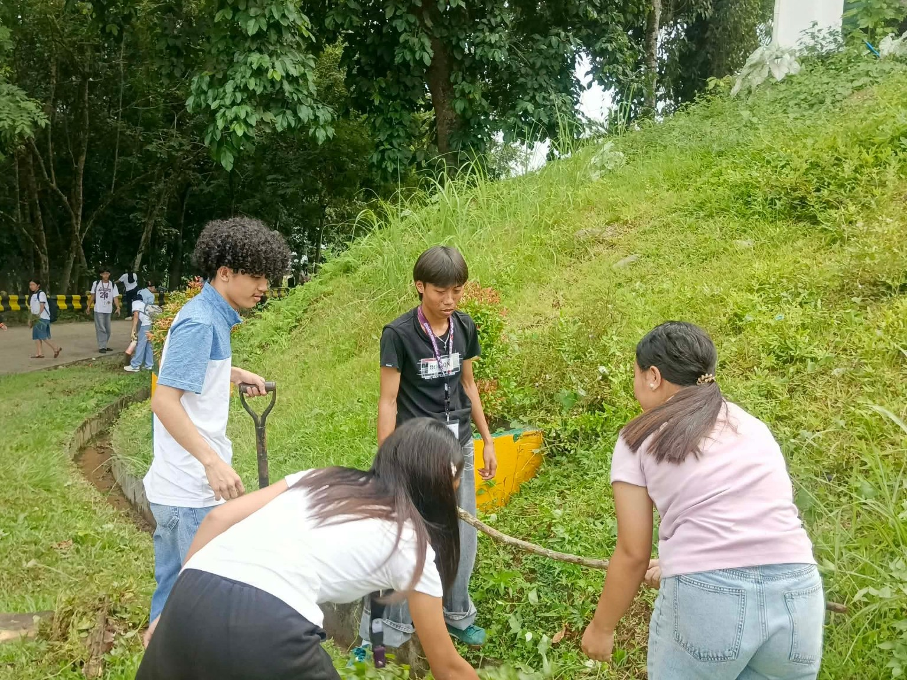
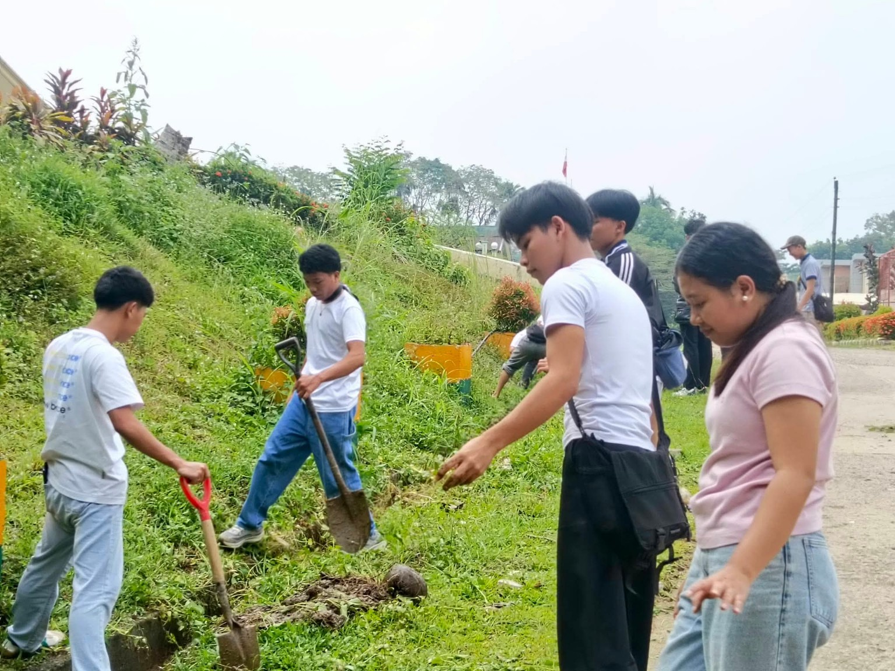

Education
Learning helps students develop knowledge, critical thinking, and skills they can use to understand and solve problems in their communities.
A GE 5 ADVOCACY BLOG
How Students Can Create Positive Change and Help Build a Better Philippines.
Discover Our Mission ↓01 — UNDERSTANDING OUR ROLE
Young people are an important part of Philippine society. Through education, responsible citizenship, creativity, and community involvement, students can help create meaningful changes in their surroundings.
Learning helps students develop knowledge, critical thinking, and skills they can use to understand and solve problems in their communities.
Responsible young citizens respect others, follow fair rules, think critically, and contribute positively to society.
Students can lead by example, share useful ideas, support classmates, and inspire others to participate in positive activities.
02 — UNDERSTANDING OUR COMMUNITY
Communities face different challenges, but students can help through safe, practical, and responsible actions.
Practice waste segregation, reduce unnecessary plastic use, and participate in approved community clean-up activities.
Check information before sharing it. Compare reliable sources and avoid spreading unverified claims on social media.
Help classmates, share learning materials when appropriate, and support organized activities that benefit others.
Encourage peer tutoring, share study tips, and help create a respectful environment where students can learn together.
03 — REAL-LIFE ACTION
Change begins when young people work together. These photos show students taking part in an outdoor activity, demonstrating teamwork and care for shared spaces.

Students demonstrate cooperation by working together toward a shared goal. Teamwork helps young people develop responsibility and community spirit.

Participating in community activities teaches students the importance of helping others, caring for shared spaces, and contributing to positive change.
04 — BE PART OF THE CHANGE
You do not need to be famous, wealthy, or powerful to make a difference. Start with actions you can take in your everyday life.
Study honestly, complete your responsibilities, and use your knowledge to help others.
Dispose of waste properly, conserve resources, and join organized environmental activities.
Share verified information, respect privacy, and communicate with kindness.
Volunteer in suitable activities, support classmates, and listen to other people's ideas and concerns.
“Positive change begins when we turn good intentions into responsible actions.”
— A reminder for every young Filipino05 — TEST YOUR KNOWLEDGE
Answer these questions to see what you have learned.
06 — YOUR TURN TO REFLECT
Think about one simple action you can take to help your school or community.
Your reflection is saved only in this browser on this device. It is not uploaded to a server.
07 — LEARN MORE
Consult reliable sources for more information about youth development, education, and children's rights. Review the specific pages you use and cite them in your final school submission.
OUR FUTURE STARTS TODAY
We may be young, but we can learn, lead, care, and contribute. A better Philippines begins with responsible citizens who are willing to take meaningful action.
Back to Top ↑